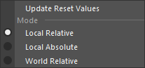

Remote Slider
UI から トランスフォームノードのアトリビュートを操作します。

使用方法
専用メニューか以下のコマンドで起動します。
import faketools.tools.remote_slider_ui
faketools.tools.remote_slider_ui.show_ui()
基本的な使用方法

- ツールで動かしたいノードを選択します。トランスフォームタイプのノードのみが有効です。
- ツール上部のノードリストへカーソルを移動し、右クリックの [ Set Items ] よりノードをリストに登録します。
- 登録したノード名と下部のアトリビュートリストから対象のアトリビュートを選択しスライダーを操作し値を操作します。
各モードについて

[ Edit ] メニューより値をスライダーでどのように操作するかを選択できます。以下のモードがあります。
-
Local Absolute モード
- ノードをそのローカル空間において、スライダーの値が直接その値に代入されます。
- この時 [ Reset ] ボタンは、translate、rotate であれば 0 を scale であれば 1 の値をその値に設定します。
-
Local Relative モード
- ノードをそのローカル空間において、スライダーの値を現在の値に追加するように動かします。
- この時の現在の値は、ノードをリストに登録した時にツール内に記録されます（ユーザーが参照することはできません）。この値は、[ Reset ] ボタンを実行した時も使用されます。
-
World Relative モード
- ノードをそのワールド空間において、スライダーの値を現在の値に追加するように動かします。
- このモードでは、選択可能なアトリビュートは一つとなり、また、scale 属性を選択することはできません。
- この時 [ Reset ] ボタンは、その属性における他の三つの値も同時に元の位置に戻します。例えば translateX を選択して [ Reset ] を実行した時は、translateY と Z の値もノード登録時の状態にリセットします。
Local Relative モードと World Relative モードでスライダーの動作や [ Reset ] 時に使用される 値 は [ Update Reset Values ] で更新可能です。
オプション
マーキングメニュー

ノードリストを右クリックすることで出現するメニューです。それぞれ以下の機能を持っています。
- Set Items
- シーン上で選択した transform ノードをリストに登録します。
- Remove Items
- ノードリストで選択されたノードをリストから除外します。
- Select All Items
- Select Nodes
- ノードリスト上で選択されたノードを実際にシーン上で選択します。
Step ボタン
+ と - の各 [ Step ] ボタンは、スライダーの値を決まった値で増減します。ボタンのクリック方法によりその値は変化します。
- 何も押さずにクリックした場合
- Shirt キーを押しながらクリックした場合
- Ctrl キーを押しながらクリックした場合
各数値フィールド
スライダーの下部に整列している数値フィールドは、左から スライダーの最小値、現在の値、最大値を示します。各フィールドには直接値を入力できます。

また、最小値、最大値フィールドを右クリックすることによりよく使用しそうな値を選択することができます。